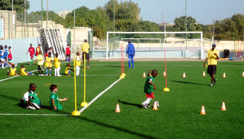
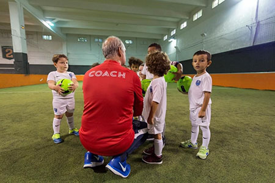
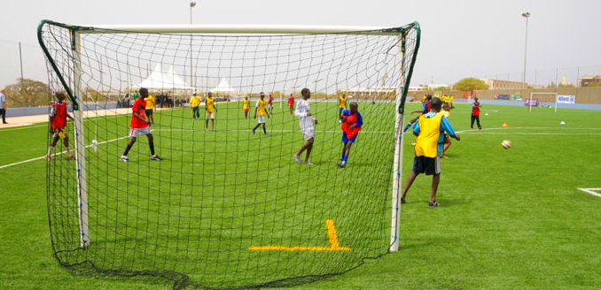
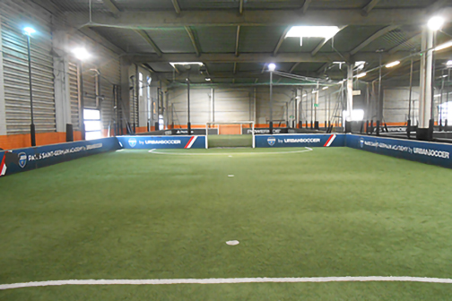
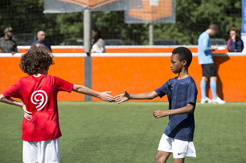

DES ENTRAÎNEMENTS ADAPTÉS À TOUS
- 32 séances d’entraînements élaborées par l'OM et adaptées au niveau et à l’âge des enfants
- Des éducateurs formés par le FC Barcelone
- Un suivi personnalisé des enfants
- Tenue personnalisée Football school Academy avec le prénom de l’enfant
- Possibilité de participer aux Ligues Football school Academy
- Lien avec le club du l'OM en France et le FC Barcelone en Espagne
- Dans les centres UrbanSoccer

BABYSOCCER
Avec le BabySoccer, les enfants peuvent commencer à s’essayer aux joies du football et vont pouvoir s’amuser dès l’âge de 3 ans (enfants nés en 2016). Des séances d’une heure avec un effectif réduit ´ huit enfants pour garder un maximum leur permettront d’améliorer leur motricité, leur attention et d’apprendre les premières règles d’un sport collectif.

DÉCOUVERTE DE LA COMPÉTITION LOISIR
- Possibilité de participer à 1 ou 2 Ligues Football school Academy
- Sélection des meilleurs joueurs dans chaque centre de U9 à U15. Les 20 meilleurs participeront à la Football School Training Experience qui aura lieu à Abidjan avec les coachs des meilleures équipes de jeune de L'OM.
- 11 joueurs U13 et 11 joueurs U11 participeront à la Football WORLD CUP entre les différentes Academy à travers le monde (participation payante à cet événement)
- Les 2 meilleurs U15 et U14 participeront à un stage avec les 2 meilleurs joueurs des différentes Academy à travers le monde (participation payée par l’Academy)

LES CENTRES URBANSOCCER
- Des terrains indoor et outdoor en synthétiques dernières générations
- Un club-house pour accueillir les parents
- Terrains de foot 5 : intensité, répétition, progression
- Flexibilité du nombre et du choix des créneaux (jour et horaire) d’entrainement

LES VALEURS
La Football school Academy représente la base du club et forme aujourd’hui dès le plus jeune âge les futurs joueurs et ambassadeurs de demain. L’objectif principal est donc de faire progresser les enfants tout en prenant du plaisir au sein d’infrastructures de qualité et avec pour mots d’ordre : respect, plaisir et fair-play.
Le respect et l’attitude des enfants et des parents est un point central du programme de l’Academy afin que tout le monde puisse prendre du plaisir et s’épanouir. Les coachs et l’encadrement veilleront particulièrement à ce que les enfants véhiculent la bonne attitude entre eux, leur entourage et vis-à-vis de leur propre personne.
